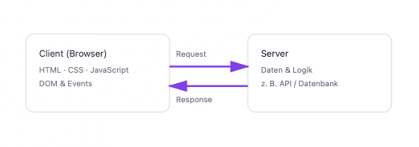

Grundlegende Web-Architekturen
Web-Programmierung · Vorlesung 1 · Client / Server
Webanwendungen basieren fast immer auf einer Client-Server-Architektur.
Die grundlegende Frage lautet:
Wo läuft welche Logik?
Grundprinzip: Client & Server
- Client: Browser des Nutzers (Darstellung & Interaktion)
- Server: Stellt Inhalte, Daten oder Funktionen bereit
- Kommunikation meist über HTTP

Varianten (stark vereinfacht)
- Dünner Client: Logik hauptsächlich auf dem Server
- Dicker Client: Viel Logik im Browser (JavaScript)
- Moderne Webapps kombinieren meist beide Ansätze
Merke:
Die Architektur entscheidet maßgeblich über Performance,
Benutzerfreundlichkeit und Wartbarkeit
einer Webanwendung.